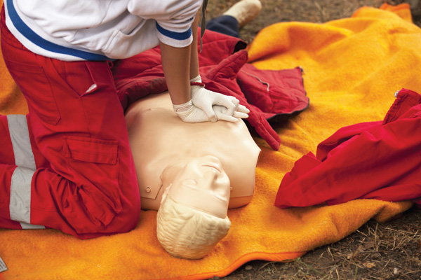
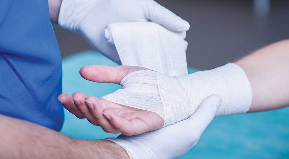

Послідовність першої домедичної допомоги
Перший крок – оцініть безпеку на місці події.
1. Насамперед з’ясуйте, чи є загроза вашому життю на місці події? Якщо не будете дбати про себе, не зможете допомогти іншим, а станете наступним потерпілим.
2. З’ясуйте, чи є довкола люди, які можуть вам допомогти. Одна пара рук – добре, але дві, три – краще. Оперативно запитайте людей, як їх звати, і попросіть допомогти.
3. Оцініть, скільки потерпілих, і визначте пріоритет – кому допомогти спочатку. Першочергові випадки – це люди при свідомості. Рятуйте тих, у кому точно впевнені, що живий, і в кого небезпечний характер травм. Паралельно допомагайте тим, кого можна залучити до роботи та в кого паніка, однак немає загроз життю. Заспокоюйте їх і просіть долучитися до вас.
Другий крок – оцініть життєво важливі показники.
1.Спробуйте заговорити з людиною – з’ясуйте, чи при свідомості вона. Голосно зверніться до неї: «Ви мене чуєте?!». Вона може відповісти або кивнути, подати інший знак. Якщо не кивнула, тоді може бути порушення слуху. Застосуйте тактильний жест – торкніться її плеча.
2. Коли присідаєте біля людини, не забувайте про щит – підніміть коліно, закриваючи себе ним, руку витягніть. При цьому повторюйте питання: «Вам потрібна допомога?».
3. Далі випитуйте максимум інформації в людини, щоб зрозуміти, як допомогти
Якщо потерпілий не відповів на ваші запитання, потрібно перевірити ознаки життя.На визначення життєво важливих показників потрібно витрачати не більше 10 секунд. Якщо дихання в потерпілого є, то й серцебиття теж. Правило таке: відчуваю, чую, бачу. Ви можете відчути тепло дихання, почути шум дихання і побачити, як піднімається грудна клітка. Але щоб зрозуміти це, потрібно спочатку відкрити дихальний шлях. Для цього: закиньте голову людини назад. У такому положенні відкривається повністю для виходу повітря й шуму дихальна трубка. Подивіться, чи вільна ротова порожнина. Нахиліться до рота й очима дивіться на грудну клітку. Маєте відчути тепло чи шум із рота, побачити, як піднімається грудна клітка. Якщо в потерпілого є сторонні предмети в роті, вийміть їх. Якщо це блювотні маси, застосуйте власний одяг для очищення. Це важливо зробити для того, щоб почути тепло і шум – з’ясувати, чи дихає людина.
Якщо ви побачили кровотечу, переходьте до її зупинки, а далі відкриваєте дихальний шлях, перевіряєте дихання. Про всі дії потрібно попереджати потерпілого.
Третій крок – викличте швидку за номером 103.
Четвертий крок – надайте першу допомогу.
Перший стан людини – дихання є, свідомість теж. Переверніть людину на бік, до себе – у бокове стабільно безпечне положення. Це потрібно робити в більшості випадків, за винятком поранення хребта. Закрийте людину термоковдрою, а також іншим одягом до приїзду бригади медичної допомоги.
Другий стан – дихання немає, людина без свідомості. За таких умов потрібно зробити серцево-легеневу реанімацію – непрямий масаж серця і штучні вдихи, якщо людина тепла й податлива. Робіть до того часу, доки не приїде швидка, доки людина не отямиться або доки маєте сили. 32 натиски зі швидкістю 100–120 разів на хвилину. За 1 секунду – 2 рази. На 32-му разі роблять вдих. Але тільки тим людям, яких добре знаєте, щоб не заразитися. Думайте про власну безпеку насамперед.
Як зупинити кровотечу?
1. Оцініть, зовнішня чи внутрішня, а також слабка чи сильна кровотеча.
2. Зробіть прямий тиск на рану. Прикладіть долоню потерпілого до місця ураження. Не варто самому торкатися місця ураження. Подбайте про власну безпеку.
3. Якщо рана забруднена, її промивають лише водою, не знезаражують. Коли знайшли ватний тампон, серветку, тканину, складену у валик чи будь-що інше, притисніть, зробіть пов’язку. Запам’ятайте, що в мирних умовах джгут не використовують, оскільки багато випадків неправильного накладання. Джгути і турнікети – для тактичної медицини у військових умовах.

